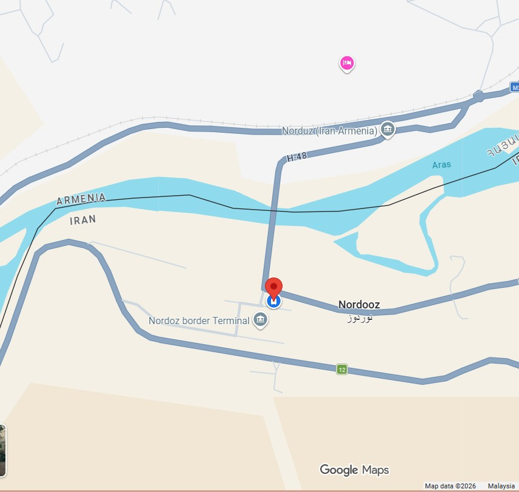

Real Story · 中文
本来以为可以直接进 Armenia，结果国家政策改了。
01 March 2024，我 overnight 在 Jolfa checking station。 第二天早上，我开到 Norduz Border Terminal，准备进入 Armenia。 原本我以为 Malaysia passport 去 Armenia 是 visa-free。
可是到边境才知道，Armenia 在 02 February 2024 改了条款， Malaysia passport holder 需要申请 e-visa。 我在边境听到的说法，是这个变化可能跟 Malaysia 在以巴冲突中的政治立场有关。 这部分我只能记录为当时听到的 border-side explanation，不把它写成我确认过的事实。
Armenia 那边的 police 也很好。 他们讲的语言我听不懂，感觉像 former Soviet region 的语言环境。 他们也有帮我跟上司沟通。 但是基于国家政策，我还是被退回 Iran side。
那一刻很无奈。 国家大事扫到我尾巴。 我只是一个 overlander，结果被政策变化停在边境。

Back to Iran Side
The customs officers let me wait.
After being rejected at Armenia side, I returned to Iran customs and explained my situation. The Iran customs officers allowed me to stay in the car park while I applied for the Armenia e-visa.
From 02 March to 05 March, the Iran customs car park became my temporary waiting place. It was not a planned stop, but by then I had learned that overland travel often depends on waiting: for documents, for weather, for repairs, for borders, and sometimes for countries to say yes.
Small Routine
Alicafe at the border.
During those waiting days, the routine became small and simple: stay with Toyotaki, apply for the e-visa, wait, boil water, drink coffee, and pass time.
One funny detail: I drank Alicafe instant coffee — a Malaysian brand — which I had bought in Iran. At the Iran–Armenia border, while waiting to enter a new country, I was drinking a little taste from home.
English Memory Summary
A border pause before Armenia.
On 01 March 2024, Tuzi overnighted at Jolfa checking station. The next morning, she drove to the Norduz Iran–Armenia border expecting visa-free entry into Armenia. However, Armenia had recently changed the requirement for Malaysian passport holders, and an e-visa was now needed.
The Armenian border officers were helpful and tried to communicate with their superior, but due to national policy Tuzi was sent back to the Iran side. Iranian customs allowed her to stay in the customs car park while she applied for the e-visa. From 02 March to 05 March, she waited there, picking pine nuts / pinecones as small souvenirs and drinking Alicafe instant coffee bought in Iran.
On 06 March 2024, the next chapter would finally begin: Armenia.
Heart Statement
有些 border 不是关门，只是先说：not yet.
I was not rejected by the road. I was only asked to wait until the paperwork could catch up with the journey.